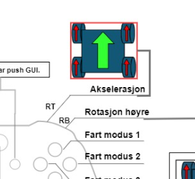
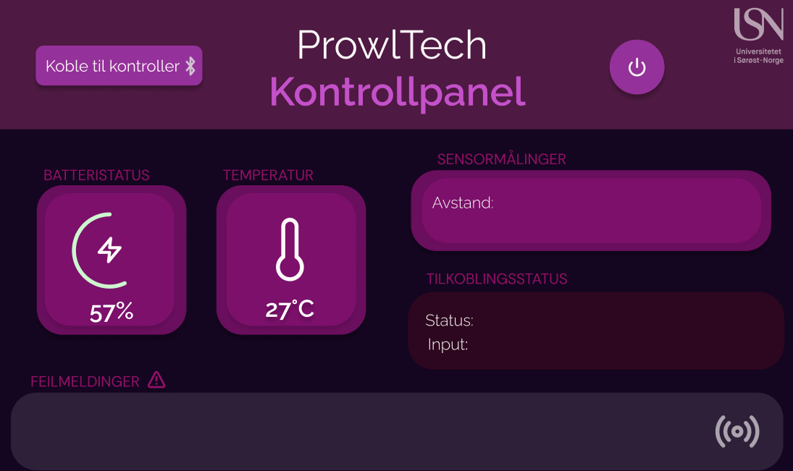
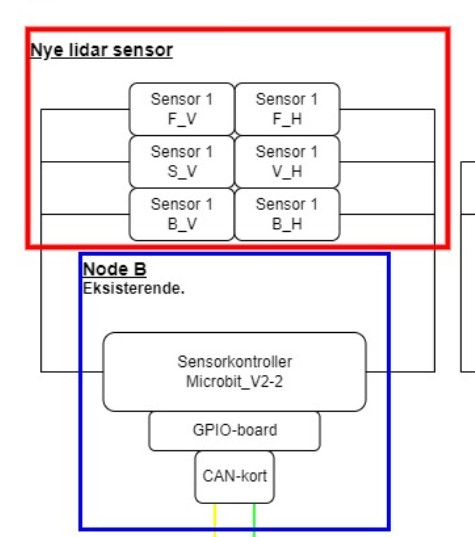
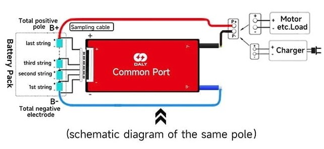
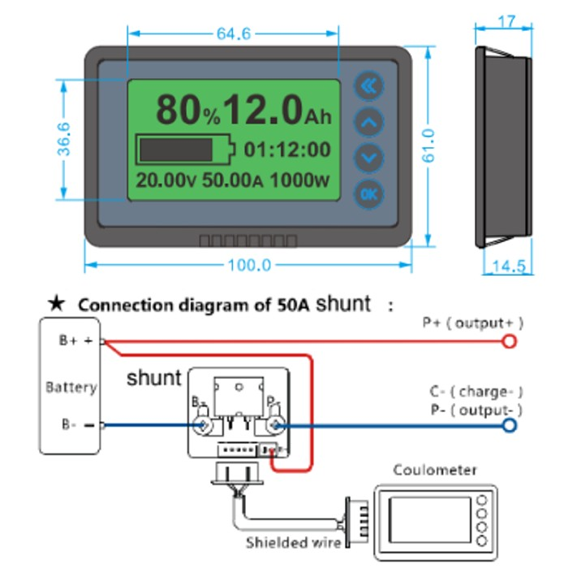
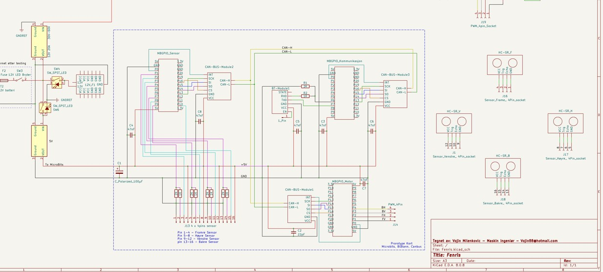

Bevegelsesfunksjonaliteter (Data)
Implementer bevegelsesfunksjonaliteter som tillater bilen å kjøre i alle retninger. Dette inkluderer styring av motorer, akselerasjon og retning for å oppnå optimal bevegelse.
For å gi bilen full bevegelsesfrihet, har vi utviklet mekanismer som lar den kjøre i alle retninger. Ved å styre motorer, akselerasjon og retning individuelt, oppnår vi optimal kontroll og smidig manøvrering, særlig nyttig i trange omgivelser eller ved presise bevegelser.

Hastighetsfunksjonalitet (Data)
Utvikle funksjonalitet som gjør det mulig å senke hastigheten ned til 5 mm/s. Dette kan inkludere hastighetskontrollsystemer og programvare som styrer motorytelsen basert på ulike parametre.
Ved å senke hastigheten ned til 5 mm/s får vi svært nøyaktig bevegelsesstyring. Dette er spesielt viktig når bilen skal utføre oppgaver som krever presisjon, for eksempel manøvrering rundt sensitive komponenter. Funksjonaliteten håndteres gjennom programvare som finjusterer motorkraft og akselerasjon.

Grafisk Brukergrensesnitt (Data)
Design et grafisk brukergrensesnitt (GUI) som er festet til bilen. GUI-et skal vise informasjon om bilens tilstand, kontrollsystemer, og være brukervennlig for interaksjon.
Et lett tilgjengelig GUI viser sanntidsinformasjon om bilens status. Dette inkluderer batterinivå, feilmeldinger og sensordata. Ved å ha skjermen festet direkte på kjøretøyet, kan brukeren enkelt justere innstillinger og overvåke systemet uten eksternt utstyr.

Sensorsystem (Data)
Utvikle et sensorsystem for å overvåke bilens omgivelser og tilstand. Dette kan inkludere sensorer som måler avstand, temperatur og fuktighet for å sikre riktig drift.
For å sikre stabil drift og legge til rette for potensielt autonome funksjoner, har vi satt opp ulike sensorer som blant annet måler avstand og temperatur. Sensorene hjelper føreren og systemet med å unngå kollisjoner, overvåke driftstilstand og ta informerte beslutninger under kjøring.

Hastighetsmodus-knapper (Data)
Implementer knapper for valg av ulike hastighetsmoduser, som for eksempel lav, middels og høy hastighet. Dette gir brukeren muligheten til å justere kjøretøyets ytelse.
Brukeren kan enkelt bytte mellom lav, middels og høy hastighet ved hjelp av dedikerte knapper. Dette gjør det mulig å raskt tilpasse kjøretøyets ytelser til ulike situasjoner – fra sakte finmanøvrering til rask forflytning.

Ladesystemets Sikkerhet (Elektro)
Ladesystemet skal ha et sikkerhetssystem som bryter prosessen automatisk ved eventuelle feil, for å hindre skade på både batteriet og det elektriske systemet.
For å beskytte både kjøretøy og batteri, er ladesystemet utstyrt med en automatisk sikring som bryter ladingen hvis det oppdages feil. Dette bidrar til å hindre skade og øker driftssikkerheten, særlig ved langvarig bruk og hyppig lading.

Batteri- og Ladestatus (Elektro)
Batteristatus og ladestatus skal vises på display på bilen, slik at brukeren alltid har oversikt over hvor mye strøm som er tilgjengelig og hvor lang tid det er til full lading.
Et eget display på bilen viser alltid gjenværende batterikapasitet og ladestatus. Slik får brukeren rask og visuell oversikt over hvor mye strøm som er tilgjengelig, og hvor lang tid det er til fulladet batteri.

Forbedret Ledningsnett (Elektro)
Forbedre ledningsnettet for å sikre effektiv strømfordeling og redusere potensielle feil. Dette kan inkludere oppgraderinger til kabelkvalitet, ledningsdannelse og beskyttelse.
Vi har oppgradert ledningsnettet for å redusere potensielle feil, øke driftssikkerheten og sikre jevn strømfordeling. Dette innebærer bedre kabling, ryddigere oppsett og ekstra beskyttelse mot kortslutninger.

Drivlinjepresisjon (Maskin)
Drivlinjen skal være uten slark mellom motor og hjul og ha høy presisjon for å sikre at kjøretøyet beveger seg effektivt og nøyaktig i ønsket retning.
For å oppnå nøyaktige bevegelser uten unødig slark mellom motor og hjul, skal vi optimalisert drivverket. Dette øker bilens stabilitet og gir en mye mer forutsigbar kjøreopplevelse, spesielt i høypresisjonsoppgaver.

Modulært Design (Maskin)
Utvikle et modulært design som muliggjør fleksibel videreutvikling av kjøretøyet. Modulenhetene skal kunne byttes ut og oppgraderes etter behov.
Bilen er konstruert slik at flere deler enkelt kan byttes eller oppgraderes. Dette gir stor fleksibilitet, slik at prosjektet og kjøretøyet kan videreutvikles med nye funksjoner uten å måtte bygge om hele systemet.

3D-Printede Komponenter (Maskin)
Mest mulig av komponentene skal produseres ved hjelp av 3D-printing for å redusere produksjonskostnader og gjøre det enklere å tilpasse komponentene etter behov.
Ved å bruke 3D-printing for flest mulig deler, reduserer vi produksjonskostnader og gjør det enklere å teste nye design. Eventuelle feil kan raskt rettes opp, og komponentene kan tilpasses fortløpende etter behov.

Rammeverk med Alu T-slot profiler (Maskin)
Videreføre eksisterende rammeverk for stabilitet og enkel montering. Bruk av Alu T-slot profiler gjør det lettere å bygge og justere strukturen under utviklingen.
Bilens grunnstruktur videreføres med robuste T-slot profiler, noe som gir både stabilitet og fleksibilitet. Dette forenkler montering av nye komponenter og justeringer underveis, slik at vi kan eksperimentere uten å gå på bekostning av sikkerheten.

Utbyttbart Hjuloppheng (Maskin)
Hjulopphenget skal være enkelt å bytte for vedlikehold og oppgraderinger. Dette gjør det enklere å tilpasse kjøretøyet etter nye behov eller for å bytte slitte komponenter.
Hjulopphenget er designet for rask utskifting og vedlikehold. Slik kan brukeren enkelt bytte eller oppgradere deler, for eksempel ved slitasje eller når det dukker opp nye krav til terreng og ytelse.

Beholde Eksisterende Bredde (Maskin)
Bilens nåværende bredde skal opprettholdes for å sikre at kjøretøyet er stabilt og kompatibelt med eksisterende infrastruktur og komponenter.
For å sikre stabilitet og kompatibilitet med eksisterende komponenter, er kjøretøyets bredde uendret. Dermed opprettholder vi balansen, unngår ekstra ombygging og sørger for at tilhørende maskindeler fortsatt passer.

Kontaktflate mellom hjul og bakke (Maskin)
Kontaktflaten mellom hjul og bakke skal være i kvadratisk fasong, som dagens løsning, for å sikre god balanse og grep på ulike overflater.
Dagens hjulløsning gir en tilnærmet kvadratisk kontaktflate, noe som bidrar til godt grep og balansert friksjon. Dette er viktig for sikker manøvrering og redusert risiko for sluring under skarpe svinger eller brå akselerasjon.

Integrert Skjerm (Maskin)
Montere en integrert skjerm med sikre fester og et presentabelt utseende, som gjør det enklere å overvåke bilens status og gjøre justeringer.
En fastmontert skjerm på rammen gjør det enkelt å overvåke og justere bilens funksjoner. Sikre fester og et ryddig design gir et profesjonelt uttrykk, samtidig som skjermen er beskyttet ved transport og bruk.